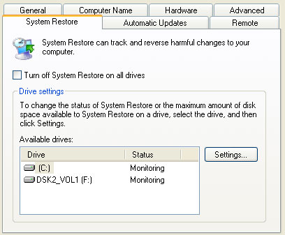
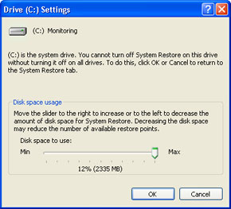
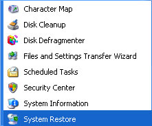
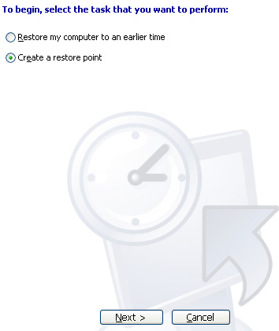
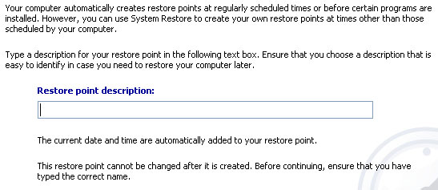
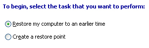
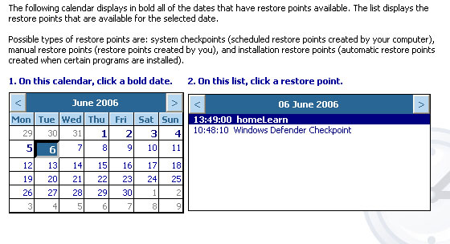

Free
computer Tutorials
|
Free
computer Tutorials
|
|
 home home |
Stay at Home and Learn | ||||
Take your PC Back to an Earlier Date with System Restore
This tutorial assumes that you have set the Control panel to Classic View. To see how to do this, click this link (opens in a new window): Set the Control Panel to Classic View
Windows XP let's you do something called a System Restore. This is when you take your computer back to an earlier time, typically done when something goes wrong with your PC. You simply select a Restore Point from a list (which we'll see how to do), and then restart. You cross your fingers and toes, and then hope the problem goes away! The settings for System Restore can be found on the System Properties dialogue box.
To bring up System Properties, click Start and then Control Panel. From the Control Panel, double click System. Another way to bring up this box is to right click the My Computer on your desktop. From the menu, select Properties. A keyboard shortcut is to hold down the Windows Logo key in the bottom left of your keyboard. Keep it held down and press your Pause/Break key. Click the System Restore tab to see the following:  To activate System Restore, make sure there is NO tick in the box "Turn off System Restore on all drives". Clicking the Settings button just brings up a box with a slider
on it. This lets you adjust how much hard disk space to let Windows
XP use for your Restore Points:  If you have a hard drive that's about 200 gigabytes, then you may want to adjust the slider down. Allow about two gigabytes.
Create a Restore PointWindows XP creates its own Restore Points, but it's a good idea to create your own. Create one every time you install software like Anti-Virus, or software that you're not sure about. Do the following. Click Start > All Programs > Accessories > System Tools.
You'll see the following menu:  Click on to System Restore and you should see the first screen of the Wizard:  Select "Create a Restore Point", and then click Next. You'll see this:  Type a name or description for your Restore Point, and click the Create button. Windows XP then tells you that it has created your Restore Point, and displays the date and time for it. Click Close and you're done!
Restoring Your Computer using a Restore PointTo use the Restore Point that you have created, or any one on the list,
click Start > All Programs > Accessories > System Tools.
Select "System Restore" from the menu:  Select "Restore my computer to an earlier time", and then click Next at the bottom of the screen. You'll see this:  You can use the calendar on the left to select a date. Then on the right, you'll see all the available restore Points. Choose one from the list on the right, and then click Next. Windows XP will then ask you to confirm the details. If you're happy with your choice of Restore Point, then click Next to take you PC back to the settings you had on that day. After a restore, or will be well. At least, that's the theory!
<--Back One Page Move on to the Next Part--> |
|||||
|